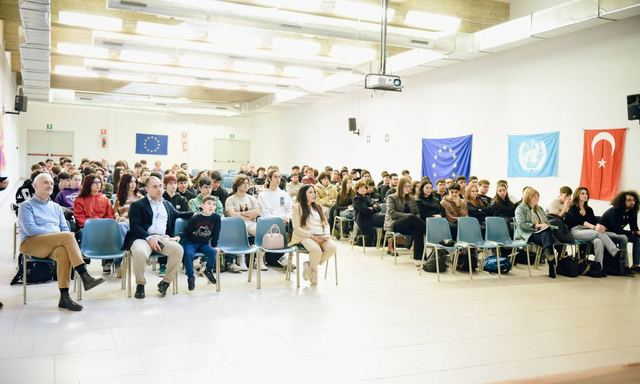
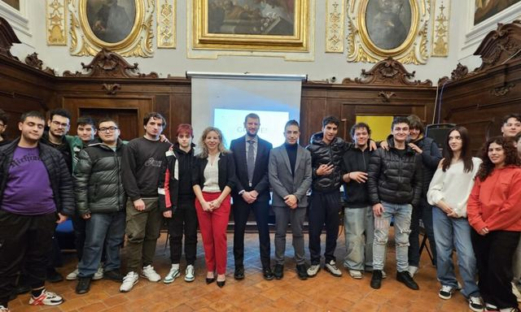
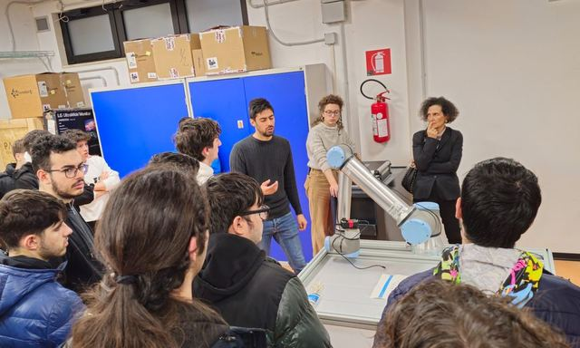
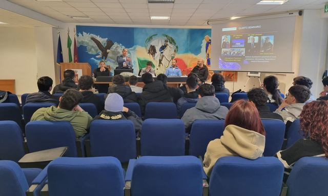
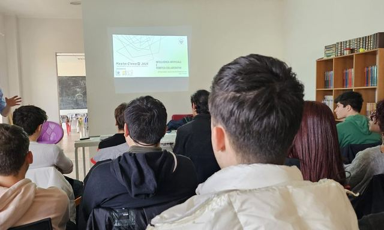
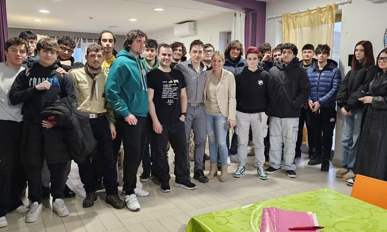
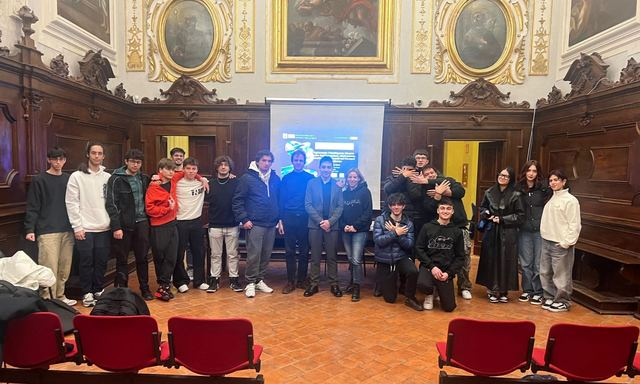
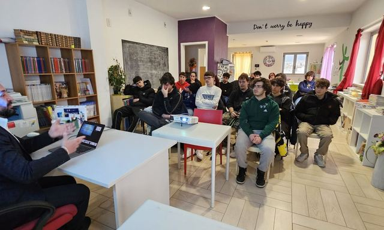
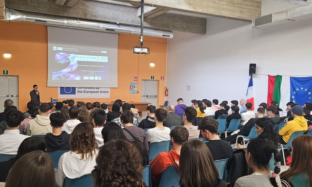
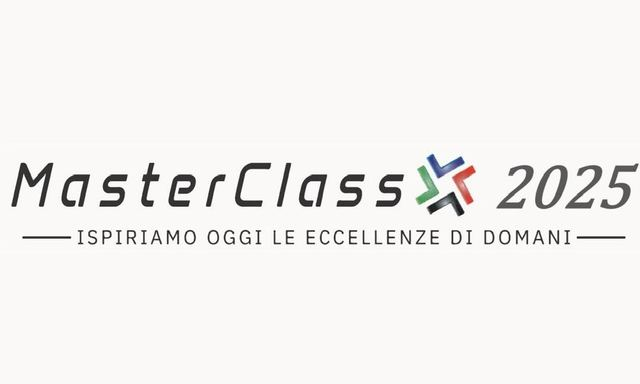

Masterclass 2025

Masterclass 2025 – Ottavo seminario – Evento finale
Sabato 15 marzo 2025, si è celebrata nell’Aula Magna dell’IIS “d’Aosta” a L’Aquila la cerimonia di chiusura della terza edizione del progetto formativo MasterClass 2025, organizzato dall’Associazione Culturale…

Masterclass 2025 – Settimo seminario
Si è svolto sabato 1° marzo, presso il Palazzetto dei Nobili, il settimo incontro formativo del progetto MasterClass 2025, organizzato dalle associazioni culturali Residenti nei Centri Storici “3:33” e Centro…

Masterclass 2025 – Sesto seminario
Sesto appuntamento del progetto MasterClass 2025, organizzato dalle associazioni culturali Residenti nei Centri Storici “3:33” e Centro Studi La Meta con il patrocinio del Comune dell’Aquila e Ufficio…

Masterclass 2025 – Quinto seminario
La sala Calvitti della questura dell’Aquila ha accolto questa mattina il quinto degli otto incontri del progetto MasterClass 2025, iniziativa formativa promossa dalle associazioni culturali Residenti nei…

Masterclass 2025 – Quarto seminario
Il 1 febbraio si è tenuto presso il Centro Studi la “Meta” il quarto seminario del programma MasterClass 2025 organizzato dal Centro Studi “La Meta” ed Associazione Culturale Residenti nei Centri Storici…

Masterclass 2025 – Terzo seminario
Il giorno 18 gennaio, si è tenuto presso il Centro Studi “La Meta” il secondo seminario del programma MasterClass 2025 organizzato dal Centro Studi “La Meta” ed Associazione Culturale Residenti nei Centri…

Masterclass 2025 – Primo seminario
L’Associazione Culturale Residenti nei Centri Storici “3:33” e il Centro Studi La Meta hanno inaugurato la terza edizione di MasterClass 2025, un percorso formativo che continua a riscuotere grande successo e…

Masterclass 2025 – Secondo seminario
Il giorno 11 gennaio, si è tenuto presso il Centro Studi “La Meta” il secondo seminario del programma MasterClass 2025 organizzato dal Centro Studi “La Meta” ed Associazione Culturale Residenti nei Centri…

Masterclass 2025 – Presentazione ITIS
La seconda edizione di MasterClass 2025 è stata brillantemente introdotta all’Istituto d’Istruzione Superiore Amedeo di Savoia Duca D’Aosta. Il progetto MasterClass 2025, ulteriormente arricchito rispetto alla…

Masterclass 2025
Benvenuti alla Masterclass 2025, un’iniziativa esclusiva dell’Associazione Culturale per i Centri Storici 3:33, dedicata a trasformare il panorama educativo di L’Aquila. Questo programma unico si immerge nel…